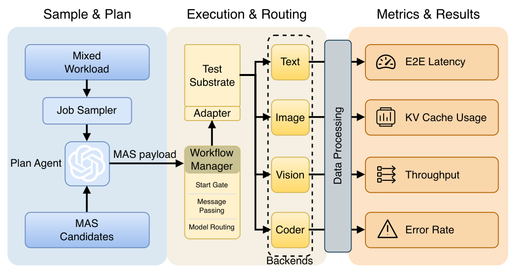
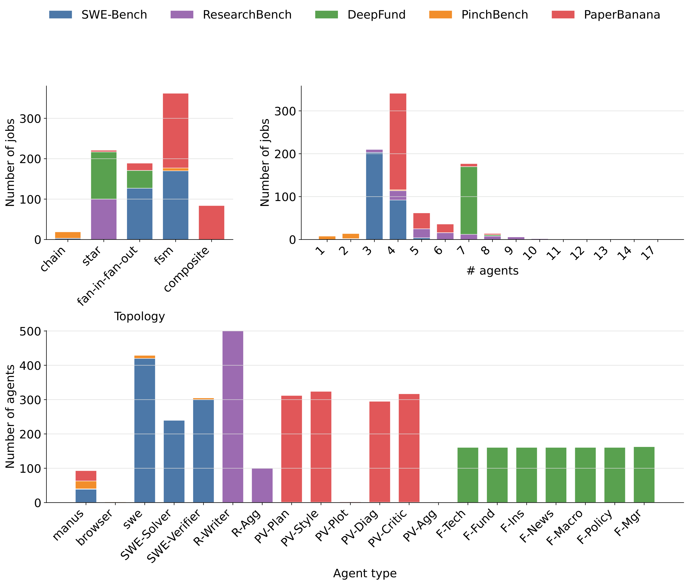
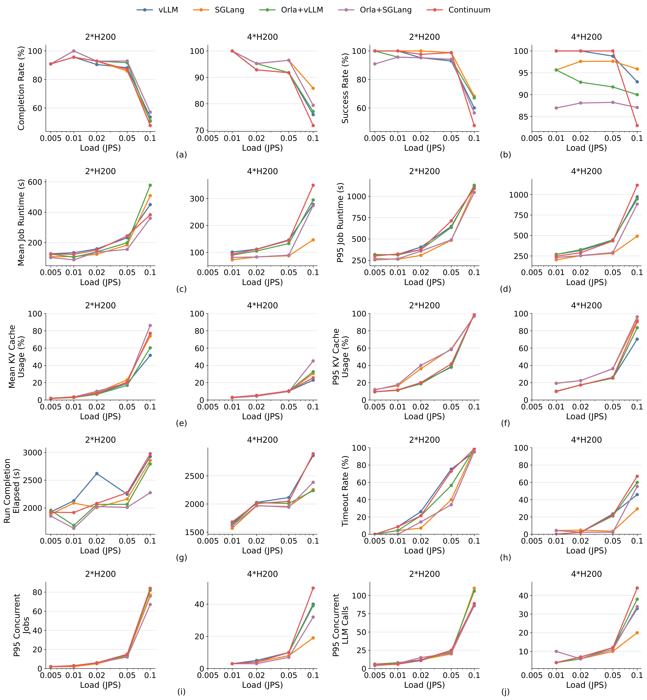
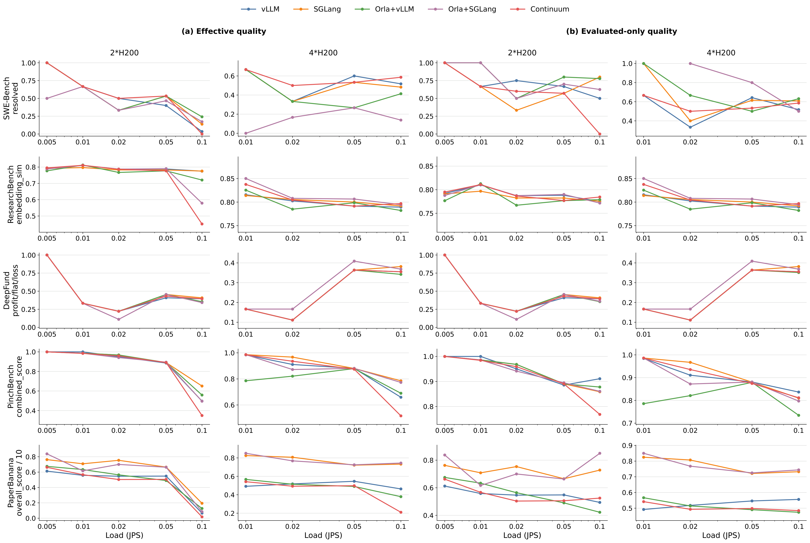
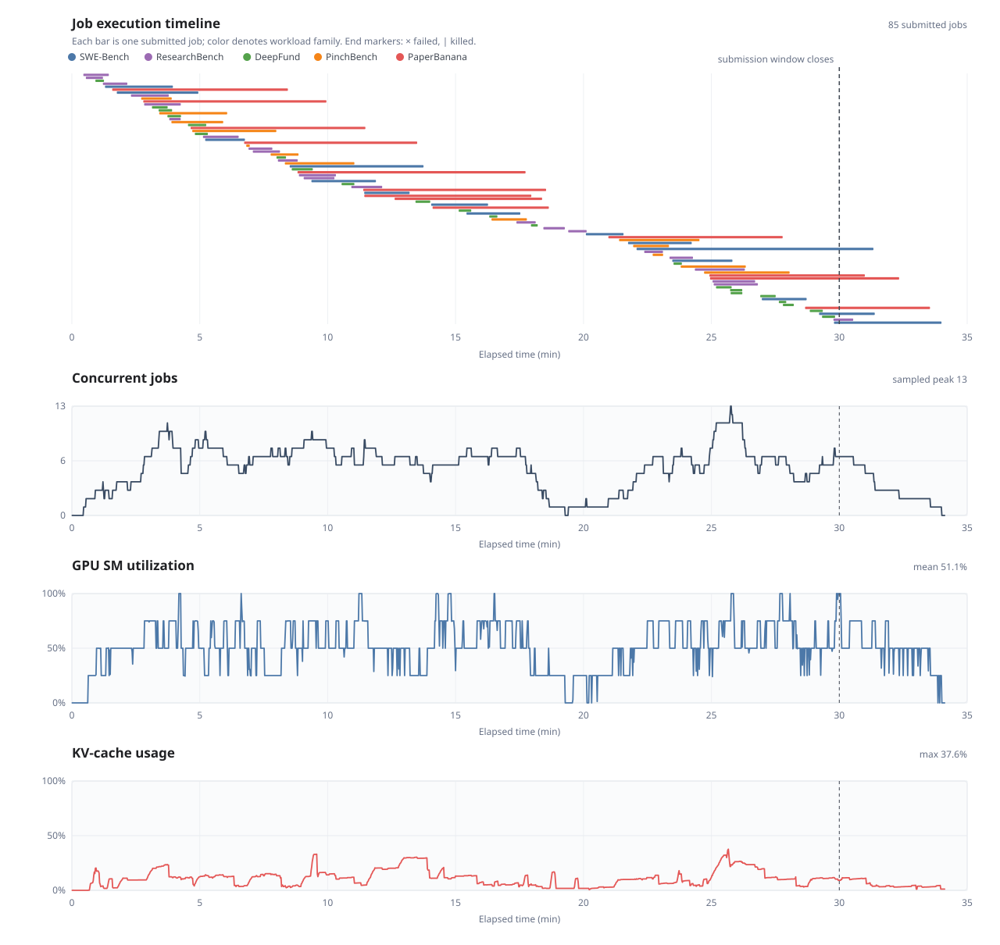

Multi-agent systems (MAS) usually coordinate heterogeneous models and tools to solve complex tasks, creating a growing need for reliable evaluation. However, a multi-agent workflow that is fastest in one serving environment can lose its advantage in another, even when its models, prompts, and task remain fixed. This makes a benchmark result conditional on how the workflow is executed.
We introduce MAS-Sys, a benchmark for measuring this dependence in multi-agent large language model (LLM) systems. MAS-Sys executes the same candidate–task pairs across serving substrates and load regimes, using five workload families spanning software repair, research synthesis, financial analysis, interactive control, and diagram generation. It records task quality alongside delivery, latency, cost, resource pressure, and failure evidence.
In a controlled motivation diagnostic, the Star workflow falls from first to fourth in mean-latency rank under KV-cache pressure, while Chain rises from fourth to first. The substrate sweeps further show that increasing load creates long runtime tails and timeout pressure. In several task families, quality among evaluated outputs changes less than effective quality over submitted jobs: the system delivers fewer usable results even when the surviving outputs remain competitive. Tool and runtime traces reveal that these outcomes involve both model serving and non-model execution. Together, the results motivate evaluating MAS designs over explicit operating conditions and reporting which tasks are delivered, how well they are solved, and where execution breaks down.


The main sweep evaluates five serving cells across two hardware regimes and multiple offered loads. System behavior and task quality are reported separately below, with one table per hardware configuration.

| Loading 2×H200 experiment cells… |
| Loading 4×H200 experiment cells… |

| Loading 2×H200 quality cells… |
| Loading 4×H200 quality cells… |

PlaceHolder